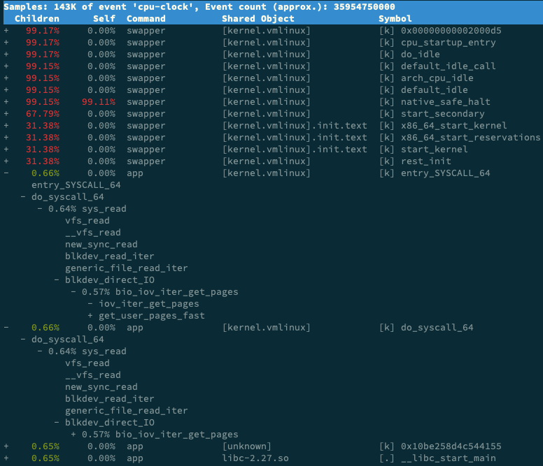

- 00 开篇词 别再让Linux性能问题成为你的绊脚石.md.html
- 01 如何学习Linux性能优化？.md.html
- 02 基础篇：到底应该怎么理解“平均负载”？.md.html
- 03 基础篇：经常说的 CPU 上下文切换是什么意思？（上）.md.html
- 04 基础篇：经常说的 CPU 上下文切换是什么意思？（下）.md.html
- 05 基础篇：某个应用的CPU使用率居然达到100%，我该怎么办？.md.html
- 06 案例篇：系统的 CPU 使用率很高，但为啥却找不到高 CPU 的应用？.md.html
- 07 案例篇：系统中出现大量不可中断进程和僵尸进程怎么办？（上）.md.html
- 08 案例篇：系统中出现大量不可中断进程和僵尸进程怎么办？（下）.md.html
- 09 基础篇：怎么理解Linux软中断？.md.html
- 10 案例篇：系统的软中断CPU使用率升高，我该怎么办？.md.html
- 11 套路篇：如何迅速分析出系统CPU的瓶颈在哪里？.md.html
- 12 套路篇：CPU 性能优化的几个思路.md.html
- 13 答疑（一）：无法模拟出 RES 中断的问题，怎么办？.md.html
- 14 答疑（二）：如何用perf工具分析Java程序？.md.html
- 15 基础篇：Linux内存是怎么工作的？.md.html
- 16 基础篇：怎么理解内存中的Buffer和Cache？.md.html
- 17 案例篇：如何利用系统缓存优化程序的运行效率？.md.html
- 18 案例篇：内存泄漏了，我该如何定位和处理？.md.html
- 19 案例篇：为什么系统的Swap变高了（上）.md.html
- 20 案例篇：为什么系统的Swap变高了？（下）.md.html
- 21 套路篇：如何“快准狠”找到系统内存的问题？.md.html
- 22 答疑（三）：文件系统与磁盘的区别是什么？.md.html
- 23 基础篇：Linux 文件系统是怎么工作的？.md.html
- 24 基础篇：Linux 磁盘I_O是怎么工作的（上）.md.html
- 25 基础篇：Linux 磁盘I_O是怎么工作的（下）.md.html
- 26 案例篇：如何找出狂打日志的“内鬼”？.md.html
- 27 案例篇：为什么我的磁盘I_O延迟很高？.md.html
- 28 案例篇：一个SQL查询要15秒，这是怎么回事？.md.html
- 29 案例篇：Redis响应严重延迟，如何解决？.md.html
- 30 套路篇：如何迅速分析出系统I_O的瓶颈在哪里？.md.html
- 31 套路篇：磁盘 I_O 性能优化的几个思路.md.html
- 32 答疑（四）：阻塞、非阻塞 I_O 与同步、异步 I_O 的区别和联系.md.html
- 33 关于 Linux 网络，你必须知道这些（上）.md.html
- 34 关于 Linux 网络，你必须知道这些（下）.md.html
- 35 基础篇：C10K 和 C1000K 回顾.md.html
- 36 套路篇：怎么评估系统的网络性能？.md.html
- 37 案例篇：DNS 解析时快时慢，我该怎么办？.md.html
- 38 案例篇：怎么使用 tcpdump 和 Wireshark 分析网络流量？.md.html
- 39 案例篇：怎么缓解 DDoS 攻击带来的性能下降问题？.md.html
- 40 案例篇：网络请求延迟变大了，我该怎么办？.md.html
- 41 案例篇：如何优化 NAT 性能？（上）.md.html
- 42 案例篇：如何优化 NAT 性能？（下）.md.html
- 43 套路篇：网络性能优化的几个思路（上）.md.html
- 44 套路篇：网络性能优化的几个思路（下）.md.html
- 45 答疑（五）：网络收发过程中，缓冲区位置在哪里？.md.html
- 46 案例篇：为什么应用容器化后，启动慢了很多？.md.html
- 47 案例篇：服务器总是时不时丢包，我该怎么办？（上）.md.html
- 48 案例篇：服务器总是时不时丢包，我该怎么办？（下）.md.html
- 49 案例篇：内核线程 CPU 利用率太高，我该怎么办？.md.html
- 50 案例篇：动态追踪怎么用？（上）.md.html
- 51 案例篇：动态追踪怎么用？（下）.md.html
- 52 案例篇：服务吞吐量下降很厉害，怎么分析？.md.html
- 53 套路篇：系统监控的综合思路.md.html
- 54 套路篇：应用监控的一般思路.md.html
- 55 套路篇：分析性能问题的一般步骤.md.html
- 56 套路篇：优化性能问题的一般方法.md.html
- 57 套路篇：Linux 性能工具速查.md.html
- 58 答疑（六）：容器冷启动如何性能分析？.md.html
- 加餐（一） 书单推荐：性能优化和Linux 系统原理.md.html
- 加餐（二） 书单推荐：网络原理和 Linux 内核实现.md.html
- 用户故事 “半路出家 ”，也要顺利拿下性能优化！.md.html
- 用户故事 运维和开发工程师们怎么说？.md.html
- 结束语 愿你攻克性能难关.md.html
- 捐赠
08 案例篇：系统中出现大量不可中断进程和僵尸进程怎么办？（下）
你好，我是倪朋飞。
上一节，我给你讲了Linux进程状态的含义，以及不可中断进程和僵尸进程产生的原因，我们先来简单复习下。
使用 ps 或者 top 可以查看进程的状态，这些状态包括运行、空闲、不可中断睡眠、可中断睡眠、僵尸以及暂停等。其中，我们重点学习了不可中断状态和僵尸进程：
不可中断状态，一般表示进程正在跟硬件交互，为了保护进程数据与硬件一致，系统不允许其他进程或中断打断该进程。
僵尸进程表示进程已经退出，但它的父进程没有回收该进程所占用的资源。
上一节的最后，我用一个案例展示了处于这两种状态的进程。通过分析 top 命令的输出，我们发现了两个问题：
第一，iowait 太高了，导致系统平均负载升高，并且已经达到了系统 CPU 的个数。
第二，僵尸进程在不断增多，看起来是应用程序没有正确清理子进程的资源。
相信你一定认真思考过这两个问题，那么，真相到底是什么呢？接下来，我们一起顺着这两个问题继续分析，找出根源。
首先，请你打开一个终端，登录到上次的机器中。然后执行下面的命令，重新运行这个案例：
# 先删除上次启动的案例
$ docker rm -f app
# 重新运行案例
$ docker run --privileged --name=app -itd feisky/app:iowait
iowait 分析
我们先来看一下 iowait 升高的问题。
我相信，一提到 iowait 升高，你首先会想要查询系统的 I/O 情况。我一般也是这种思路，那么什么工具可以查询系统的 I/O 情况呢？
这里，我推荐的正是上节课要求安装的 dstat ，它的好处是，可以同时查看 CPU 和 I/O 这两种资源的使用情况，便于对比分析。
那么，我们在终端中运行 dstat 命令，观察 CPU 和 I/O 的使用情况：
# 间隔1秒输出10组数据
$ dstat 1 10
You did not select any stats, using -cdngy by default.
--total-cpu-usage-- -dsk/total- -net/total- ---paging-- ---system--
usr sys idl wai stl| read writ| recv send| in out | int csw
0 0 96 4 0|1219k 408k| 0 0 | 0 0 | 42 885
0 0 2 98 0| 34M 0 | 198B 790B| 0 0 | 42 138
0 0 0 100 0| 34M 0 | 66B 342B| 0 0 | 42 135
0 0 84 16 0|5633k 0 | 66B 342B| 0 0 | 52 177
0 3 39 58 0| 22M 0 | 66B 342B| 0 0 | 43 144
0 0 0 100 0| 34M 0 | 200B 450B| 0 0 | 46 147
0 0 2 98 0| 34M 0 | 66B 342B| 0 0 | 45 134
0 0 0 100 0| 34M 0 | 66B 342B| 0 0 | 39 131
0 0 83 17 0|5633k 0 | 66B 342B| 0 0 | 46 168
0 3 39 59 0| 22M 0 | 66B 342B| 0 0 | 37 134
从 dstat 的输出，我们可以看到，每当 iowait 升高（wai）时，磁盘的读请求（read）都会很大。这说明 iowait 的升高跟磁盘的读请求有关，很可能就是磁盘读导致的。
那到底是哪个进程在读磁盘呢？不知道你还记不记得，上节在 top 里看到的不可中断状态进程，我觉得它就很可疑，我们试着来分析下。
我们继续在刚才的终端中，运行 top 命令，观察 D 状态的进程：
# 观察一会儿按 Ctrl+C 结束
$ top
...
PID USER PR NI VIRT RES SHR S %CPU %MEM TIME+ COMMAND
4340 root 20 0 44676 4048 3432 R 0.3 0.0 0:00.05 top
4345 root 20 0 37280 33624 860 D 0.3 0.0 0:00.01 app
4344 root 20 0 37280 33624 860 D 0.3 0.4 0:00.01 app
...
我们从 top 的输出找到 D 状态进程的 PID，你可以发现，这个界面里有两个 D 状态的进程，PID分别是 4344 和 4345。
接着，我们查看这些进程的磁盘读写情况。对了，别忘了工具是什么。一般要查看某一个进程的资源使用情况，都可以用我们的老朋友 pidstat，不过这次记得加上 -d 参数，以便输出 I/O 使用情况。
比如，以 4344 为例，我们在终端里运行下面的 pidstat 命令，并用 -p 4344 参数指定进程号：
# -d 展示 I/O 统计数据，-p 指定进程号，间隔 1 秒输出 3 组数据
$ pidstat -d -p 4344 1 3
06:38:50 UID PID kB_rd/s kB_wr/s kB_ccwr/s iodelay Command
06:38:51 0 4344 0.00 0.00 0.00 0 app
06:38:52 0 4344 0.00 0.00 0.00 0 app
06:38:53 0 4344 0.00 0.00 0.00 0 app
在这个输出中， kB_rd 表示每秒读的 KB 数， kB_wr 表示每秒写的 KB 数，iodelay 表示 I/O 的延迟（单位是时钟周期）。它们都是 0，那就表示此时没有任何的读写，说明问题不是 4344 进程导致的。
可是，用同样的方法分析进程 4345，你会发现，它也没有任何磁盘读写。
那要怎么知道，到底是哪个进程在进行磁盘读写呢？我们继续使用 pidstat，但这次去掉进程号，干脆就来观察所有进程的 I/O 使用情况。
在终端中运行下面的 pidstat 命令：
# 间隔 1 秒输出多组数据 (这里是 20 组)
$ pidstat -d 1 20
...
06:48:46 UID PID kB_rd/s kB_wr/s kB_ccwr/s iodelay Command
06:48:47 0 4615 0.00 0.00 0.00 1 kworker/u4:1
06:48:47 0 6080 32768.00 0.00 0.00 170 app
06:48:47 0 6081 32768.00 0.00 0.00 184 app
06:48:47 UID PID kB_rd/s kB_wr/s kB_ccwr/s iodelay Command
06:48:48 0 6080 0.00 0.00 0.00 110 app
06:48:48 UID PID kB_rd/s kB_wr/s kB_ccwr/s iodelay Command
06:48:49 0 6081 0.00 0.00 0.00 191 app
06:48:49 UID PID kB_rd/s kB_wr/s kB_ccwr/s iodelay Command
06:48:50 UID PID kB_rd/s kB_wr/s kB_ccwr/s iodelay Command
06:48:51 0 6082 32768.00 0.00 0.00 0 app
06:48:51 0 6083 32768.00 0.00 0.00 0 app
06:48:51 UID PID kB_rd/s kB_wr/s kB_ccwr/s iodelay Command
06:48:52 0 6082 32768.00 0.00 0.00 184 app
06:48:52 0 6083 32768.00 0.00 0.00 175 app
06:48:52 UID PID kB_rd/s kB_wr/s kB_ccwr/s iodelay Command
06:48:53 0 6083 0.00 0.00 0.00 105 app
...
观察一会儿可以发现，的确是 app 进程在进行磁盘读，并且每秒读的数据有 32 MB，看来就是 app 的问题。不过，app 进程到底在执行啥 I/O 操作呢？
这里，我们需要回顾一下进程用户态和内核态的区别。进程想要访问磁盘，就必须使用系统调用，所以接下来，重点就是找出 app 进程的系统调用了。
strace 正是最常用的跟踪进程系统调用的工具。所以，我们从 pidstat 的输出中拿到进程的 PID 号，比如 6082，然后在终端中运行 strace 命令，并用 -p 参数指定 PID 号：
$ strace -p 6082
strace: attach: ptrace(PTRACE_SEIZE, 6082): Operation not permitted
这儿出现了一个奇怪的错误，strace 命令居然失败了，并且命令报出的错误是没有权限。按理来说，我们所有操作都已经是以 root 用户运行了，为什么还会没有权限呢？你也可以先想一下，碰到这种情况，你会怎么处理呢？
一般遇到这种问题时，我会先检查一下进程的状态是否正常。比如，继续在终端中运行 ps 命令，并使用 grep 找出刚才的 6082 号进程：
$ ps aux | grep 6082
root 6082 0.0 0.0 0 0 pts/0 Z+ 13:43 0:00 [app] <defunct>
果然，进程 6082 已经变成了 Z 状态，也就是僵尸进程。僵尸进程都是已经退出的进程，所以就没法儿继续分析它的系统调用。关于僵尸进程的处理方法，我们一会儿再说，现在还是继续分析 iowait 的问题。
到这一步，你应该注意到了，系统 iowait 的问题还在继续，但是 top、pidstat 这类工具已经不能给出更多的信息了。这时，我们就应该求助那些基于事件记录的动态追踪工具了。
你可以用 perf top 看看有没有新发现。再或者，可以像我一样，在终端中运行 perf record，持续一会儿（例如 15 秒），然后按 Ctrl+C 退出，再运行 perf report 查看报告：
$ perf record -g
$ perf report
接着，找到我们关注的 app 进程，按回车键展开调用栈，你就会得到下面这张调用关系图：

这个图里的swapper 是内核中的调度进程，你可以先忽略掉。
我们来看其他信息，你可以发现， app 的确在通过系统调用 sys_read() 读取数据。并且从 new_sync_read 和 blkdev_direct_IO 能看出，进程正在对磁盘进行直接读，也就是绕过了系统缓存，每个读请求都会从磁盘直接读，这就可以解释我们观察到的 iowait 升高了。
看来，罪魁祸首是 app 内部进行了磁盘的直接 I/O啊！
下面的问题就容易解决了。我们接下来应该从代码层面分析，究竟是哪里出现了直接读请求。查看源码文件 app.c，你会发现它果然使用了 O_DIRECT 选项打开磁盘，于是绕过了系统缓存，直接对磁盘进行读写。
open(disk, O_RDONLY|O_DIRECT|O_LARGEFILE, 0755)
直接读写磁盘，对 I/O 敏感型应用（比如数据库系统）是很友好的，因为你可以在应用中，直接控制磁盘的读写。但在大部分情况下，我们最好还是通过系统缓存来优化磁盘 I/O，换句话说，删除 O_DIRECT 这个选项就是了。
app-fix1.c 就是修改后的文件，我也打包成了一个镜像文件，运行下面的命令，你就可以启动它了：
# 首先删除原来的应用
$ docker rm -f app
# 运行新的应用
$ docker run --privileged --name=app -itd feisky/app:iowait-fix1
最后，再用 top 检查一下：
$ top
top - 14:59:32 up 19 min, 1 user, load average: 0.15, 0.07, 0.05
Tasks: 137 total, 1 running, 72 sleeping, 0 stopped, 12 zombie
%Cpu0 : 0.0 us, 1.7 sy, 0.0 ni, 98.0 id, 0.3 wa, 0.0 hi, 0.0 si, 0.0 st
%Cpu1 : 0.0 us, 1.3 sy, 0.0 ni, 98.7 id, 0.0 wa, 0.0 hi, 0.0 si, 0.0 st
...
PID USER PR NI VIRT RES SHR S %CPU %MEM TIME+ COMMAND
3084 root 20 0 0 0 0 Z 1.3 0.0 0:00.04 app
3085 root 20 0 0 0 0 Z 1.3 0.0 0:00.04 app
1 root 20 0 159848 9120 6724 S 0.0 0.1 0:09.03 systemd
2 root 20 0 0 0 0 S 0.0 0.0 0:00.00 kthreadd
3 root 20 0 0 0 0 I 0.0 0.0 0:00.40 kworker/0:0
...
你会发现， iowait 已经非常低了，只有 0.3%，说明刚才的改动已经成功修复了 iowait 高的问题，大功告成！不过，别忘了，僵尸进程还在等着你。仔细观察僵尸进程的数量，你会郁闷地发现，僵尸进程还在不断的增长中。
僵尸进程
接下来，我们就来处理僵尸进程的问题。既然僵尸进程是因为父进程没有回收子进程的资源而出现的，那么，要解决掉它们，就要找到它们的根儿，也就是找出父进程，然后在父进程里解决。
父进程的找法我们前面讲过，最简单的就是运行 pstree 命令：
# -a 表示输出命令行选项
# p表PID
# s表示指定进程的父进程
$ pstree -aps 3084
systemd,1
└─dockerd,15006 -H fd://
└─docker-containe,15024 --config /var/run/docker/containerd/containerd.toml
└─docker-containe,3991 -namespace moby -workdir...
└─app,4009
└─(app,3084)
运行完，你会发现 3084 号进程的父进程是 4009，也就是 app 应用。
所以，我们接着查看 app 应用程序的代码，看看子进程结束的处理是否正确，比如有没有调用 wait() 或 waitpid() ，抑或是，有没有注册 SIGCHLD 信号的处理函数。
现在我们查看修复 iowait 后的源码文件 app-fix1.c ，找到子进程的创建和清理的地方：
int status = 0;
for (;;) {
for (int i = 0; i < 2; i++) {
if(fork()== 0) {
sub_process();
}
}
sleep(5);
}
while(wait(&status)>0);
循环语句本来就容易出错，你能找到这里的问题吗？这段代码虽然看起来调用了 wait() 函数等待子进程结束，但却错误地把 wait() 放到了 for 死循环的外面，也就是说，wait() 函数实际上并没被调用到，我们把它挪到 for 循环的里面就可以了。
修改后的文件我放到了 app-fix2.c 中，也打包成了一个 Docker 镜像，运行下面的命令，你就可以启动它：
# 先停止产生僵尸进程的 app
$ docker rm -f app
# 然后启动新的 app
$ docker run --privileged --name=app -itd feisky/app:iowait-fix2
启动后，再用 top 最后来检查一遍：
$ top
top - 15:00:44 up 20 min, 1 user, load average: 0.05, 0.05, 0.04
Tasks: 125 total, 1 running, 72 sleeping, 0 stopped, 0 zombie
%Cpu0 : 0.0 us, 1.7 sy, 0.0 ni, 98.3 id, 0.0 wa, 0.0 hi, 0.0 si, 0.0 st
%Cpu1 : 0.0 us, 1.3 sy, 0.0 ni, 98.7 id, 0.0 wa, 0.0 hi, 0.0 si, 0.0 st
...
PID USER PR NI VIRT RES SHR S %CPU %MEM TIME+ COMMAND
3198 root 20 0 4376 840 780 S 0.3 0.0 0:00.01 app
2 root 20 0 0 0 0 S 0.0 0.0 0:00.00 kthreadd
3 root 20 0 0 0 0 I 0.0 0.0 0:00.41 kworker/0:0
...
好了，僵尸进程（Z状态）没有了， iowait 也是 0，问题终于全部解决了。
小结
今天我用一个多进程的案例，带你分析系统等待 I/O 的 CPU 使用率（也就是 iowait%）升高的情况。
虽然这个案例是磁盘 I/O 导致了 iowait 升高，不过， iowait 高不一定代表I/O 有性能瓶颈。当系统中只有 I/O 类型的进程在运行时，iowait 也会很高，但实际上，磁盘的读写远没有达到性能瓶颈的程度。
因此，碰到 iowait 升高时，需要先用 dstat、pidstat 等工具，确认是不是磁盘 I/O 的问题，然后再找是哪些进程导致了 I/O。
等待 I/O 的进程一般是不可中断状态，所以用 ps 命令找到的 D 状态（即不可中断状态）的进程，多为可疑进程。但这个案例中，在 I/O 操作后，进程又变成了僵尸进程，所以不能用 strace 直接分析这个进程的系统调用。
这种情况下，我们用了 perf 工具，来分析系统的 CPU 时钟事件，最终发现是直接 I/O 导致的问题。这时，再检查源码中对应位置的问题，就很轻松了。
而僵尸进程的问题相对容易排查，使用 pstree 找出父进程后，去查看父进程的代码，检查 wait() / waitpid() 的调用，或是 SIGCHLD 信号处理函数的注册就行了。
思考
最后，我想邀请你一起来聊聊，你碰到过的不可中断状态进程和僵尸进程问题。你是怎么分析它们的根源？又是怎么解决的？在今天的案例操作中，你又有什么新的发现吗？你可以结合我的讲述，总结自己的思路。
欢迎在留言区和我讨论，也欢迎把这篇文章分享给你的同事、朋友。我们一起在实战中演练，在交流中进步。

© 2019 - 2023 Liangliang Lee. Powered by gin and hexo-theme-book.